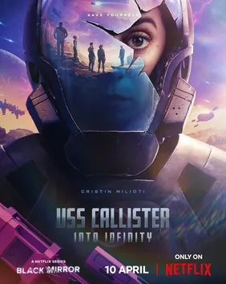

The genetics
Like the original "USS Callister", this feature-length sequel rests on an invented device that makes conscious digital copies of people from their DNA. The rogue crew are copies of real people made from samples, and the episode reveals that Callister's CEO, James Walton, has used the same illegal device to create a copy of Daly, the inventor of the game world, imprisoned in isolation to expand the game endlessly. The DNA is only the key that produces a perfect copy of the person; the cloning is digital, and the story's questions are about the rights and suffering of copies, consent, and corporate exploitation of minds. Walton is the antagonist and is finally arrested. Nothing like a DNA-to-mind copier exists; genetics serves as the plausible-sounding link between a person and a copy.
How genetics is portrayed
- Overall portrayal of genetics
- negative The DNA cloning device is an illegal tool a corporation uses to enslave a copied mind for profit, and the survivors' uneasy ending inside Nanette's body is no vindication of the technology.
- Outcome of the genetic intervention
- negative The DNA-made copies are hunted, shot or imprisoned in isolation, the real Nanette ends in a coma, and the crew survive only by being crammed into one woman's body after the game is deleted.
- James Walton (Callister Inc.)
- villain Aim: commercial (negative). The CEO uses Daly's illegal DNA cloning device to make a copy of Daly and imprisons it alone at the heart of the game to keep generating content; he shoots the crew's clones, and the episode ends with his arrest.
The story
Three months after escaping Robert Daly's private game, the digital clones of his co-workers, led by Captain Nanette, survive in the online game Infinity by robbing other players, who take them for cheaters. To reach the game's source code and move to a private server, they need to retrieve Lt. Walton, the digital copy of Callister Inc.'s CEO, James Walton. In the real world, Walton faces a reporter's questions about the rogue players and Daly's illegal DNA cloning device, and the real Nanette Cole works out that the rogue players are cloned co-workers. Both Nanettes and Walton meet in the game; Walton shoots the clones, and the real Nanette, fleeing him, is hit by a car and falls into a coma. Lt. Walton reveals that Walton has imprisoned a clone of Daly at the heart of the game to keep generating it. Captain Nanette kills the Daly clone, the game is deleted, and she wakes inside the real Nanette's body, carrying the crew within her.